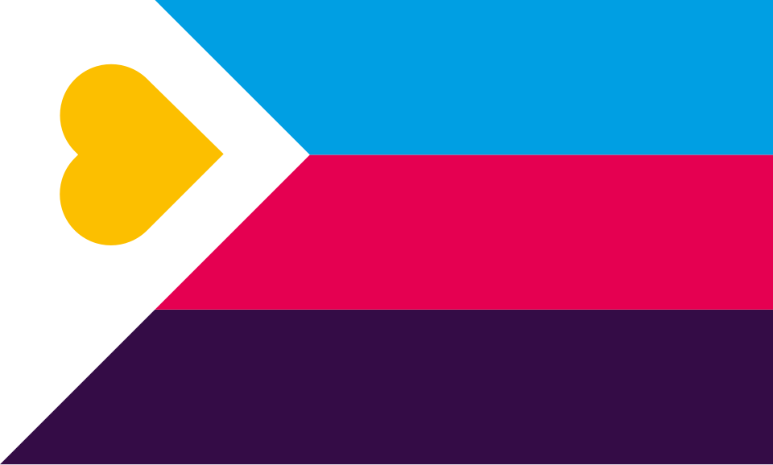

Janet Hardy is 71 and the author of several renowned books, including the seminal book on polyamory, The Ethical Slut: A Guide to Infinite Sexual Possibilities (1997), and its following two editions.

/kûm-pər-zhen/
noun
The opposite of jealousy. Delight taken in a partner’s love for another, much as a parent takes joy in the blossoming of a beloved child.
By Charlie Feuerborn Photography and additional interviewing by Trisha Bonthu Design by Vu Nguyen & Emma Spitzer
San Francisco has had a front-and-center role in polyamory’s recent rise to popularity.
The word “compersion” was invented in Haight-Ashbury in the 1980s. Conversations among queer and alternative-lifestyle communities in the late 1990s, popular books by SF locals, and the internet brought nonmonogamy out of SF and into the public eye.
We sought out authors of impactful books about polyamory and asked about their relationship with San Francisco—and their other relationships, too.
Janet Hardy is 71 and the author of several renowned books, including the seminal book on polyamory, The Ethical Slut: A Guide to Infinite Sexual Possibilities (1997), and its following two editions.

Jessica Fern is 46, an integrative psychotherapist and author of Polysecure: Attachment, Trauma and Consensual Nonmonogamy (2020), among others.
David Cooley is 47, a restorative justice facilitator and intimate relationship therapist, and co-author of Polywise: A Deeper Dive Into Navigating Open Relationships (2023) alongside Jessica. He is also Jessica’s life partner and co-parent; they legally divorced in 2020.

Kevin is 47, a tech writer and educator in polyamory communities since 2015.

Antoinette is 43, a physical therapist and educator in alternative-lifestyle communities since 2017, and Kevin’s life partner and spouse.
Why do you think SF was an epicenter for the rediscovery and popularization of polyamory?
Janet: I think with all alternative sexualities, San Francisco is the place where people move those ideas forward. There is original thinking; a lot of the activists, authors, and teachers of whatever kind of alternative sex you are talking about tend to be in San Francisco. We mostly all fuck each other and learn from each other. It is a melting pot of alternative sexualities.
Jessica: In connection to nonmonogamy, it was the openness and the resonance with California culture that felt like one of those stepping stones to alternative life in many ways: alternative food, alternative culture, queer culture, and nonmonogamy culture.
What influence did San Francisco have on your work?
Jessica: A lot of my clients are from California, specifically the Bay Area, and the bulk of both books comes from those many client hours.
David: The overwhelming majority of my clients are from the Bay Area. Part of that is the ethos; the cultural ethos is so strong in the area.
Kevin: San Francisco really came to bat for me during my book tour. On the East Coast, things feel colder and more congested, whereas in San Francisco, things felt spaced out and welcoming. People felt comfortable having the conversation; I didn’t have to fight through three layers of “Why are you asking me this question?” before offering an educational experience. There was also HBCU love in Oakland because the owner of the sex shop Feelmore went to FAMU. My wife and I went to Howard, so that shared connection made it a great trip.
What impact has your book had on SF and those identifying with polyamory?
Janet: There is rarely a week in which Dossie [my co-author] or I don’t get a note from someone saying, “You saved my life,” or “You saved my family.” A lot of people were starved for the kind of support we give them. They just feel very isolated.
What is the current makeup of your polycule?
Janet: My nesting partner and I are not sexual together and haven’t been in many years. We’re celibate poly, I guess. People laugh when I say that, but it’s entirely possible and realistic to be. I’m 71, Edward is 75, and neither of us has much libido. We were both extremely sexually active for most of our lives, and now we’re not. I sometimes call myself a polyamorous emeritus—like I used to do it well enough that people came to me to learn about it.
David: We live in the same home. I have an autonomous apartment on the lower level. Jessica lives above me, and our son lives on the third floor and goes back and forth. We each have partners who have kids, and they come and spend time with us. There’s a real blending of the family systems in a way that’s very fluid and dynamic.
Kevin: Antoinette and I have been together since January 2002. Right now I’m seeing three local partners, and we’ve been together nine, eight, and eight years, respectively. I also see several people casually—some for as much as a decade and others for a couple of years—but those relationships are less involved, more like comets.
Antoinette: My other partner and I have been together for five or six years, and I have a new human I started dating nearly one year ago.
What was your polycule size at its largest? How has your polycule’s size changed over time?
Janet: It’s hard to define the edges, you know? If you play once with someone at a party, does that make them part of your polycule? I know there was one night that we had 17 people under our roof, including kids. I would say the number of people that my former partner and I had ongoing relationships with over 15 years would be about 23.
Jessica: The largest would actually be now: three in my romantic polycule, but a total size of nine, including kids. We’re not married to any of our other partners, but it’s been years of being integrated. It’s been about four years for each of these relationships. We’re both introverts, so there’s really a limit on how many connections we each can manage at once. I’m pretty maxed out at two, as I’m also writing books, have a full practice, and am raising a child.
In the case of your adult children, are your kids poly too?
Janet: No. My younger son, age 43, is not. My older son, age 48, I think could have been poly had he met a woman interested in it, but his life partner is not—at least not so far.
How has polyamory impacted your kids?
David: I think being influenced by structures like polycules created this template for reimagining our relational structure and not wanting to throw out the places where we are tremendously compatible. Polyamory gave us a chance to reassess what needs we can meet together, what we cannot, and then how we create a structure that serves us and really serves our son, too.
Jessica: Now he’s in the house of both his parents. We did live apart for a year and a half, and now he comments on this as the best version of our family he’s seen.
Antoinette: I think overall it’s been a plus for the kids. There’s never anything wrong with having more loving adults around when humanly possible. It’s almost like having an extended group of really awesome aunts and uncles.
How much do your kids know about your being poly?
Janet: When the kids were young, I did not bring my other lovers into their lives except as friends. By the time they got old enough to understand, they were already on to me. I did a formal coming out. They were not surprised.
David: I remember explicit conversations with him where he was asking who other people are to us. Those questions became even more poignant when we were starting to separate. That’s where the conversations became more direct, talking about love as a concept that’s not bound by a relationship structure, as early as three or four years old.
Jessica: We spoke to him in developmentally appropriate language, but we were talking with him that early about it. I joke this is the one place I’m the most conservative: we’re both being really slow and cautious to have him attached to people who we’re not yet fully committed to. He has two parents. These extra partners are more like extras to him. They’re not taking the place of either of us.
Kevin: We’ve been nonmonogamous since before they were born. For them, knowing that we have other people we love in our lives is just the norm. Everybody in our polycule is open about their nonmonogamy with their kids. Everybody’s in the loop.
Antoinette: I tell my kids they have a choice. You can just say hi and bye, or if you want to get to know this person or spend more time with us, that is also an option.
Kevin: We go, “Okay, I’m gonna go see my partner now,” and they know my partner, and that’s the whole conversation. We keep them well-informed in an age-appropriate way, but then we let them make their own decisions.
What do you wish you were asked more often?
Janet: I would like to get asked more about the problems with monogamy. I’ve got nothing against monogamy. I think it works great for a lot of monogamous people. But what I see often is they think that they agree they’re going to be monogamous and treat that as the end of the discussion. Nobody tries to define what sex is, what love is. There’s a lack of conversation around it, as if monogamy were monolithic.
David: There’s a lot of philosophical inspiration that comes from polyamorous and ethical-nonmonogamous principles and values. It represents a radical departure from mononormative society. It’s compelling on a principled level, but when people get into it, it gets really hard. A lot of times people aren’t ready for that juxtaposition between a resonant philosophical idea and the impact of an embodied experience. I would love for people to ask and think about that, and be ready for how stark that juxtaposition can be.
Kevin: I think the question people don’t ask us enough is, “What do you think we can learn from this?” My answer would always be emotional literacy and forthright, proactive communication. I had to learn all of that for polyamory. I also learned that I could customize not just my relationships, but my life. I can take what my parents gave me and what pop culture gives me, then tweak it, throw it away, or adhere to it perfectly because it matters to me. That’s impacted every other aspect of my life. I don’t want to have to say no to a new experience because somebody arbitrarily got to me first.
Antoinette: It’s so much easier to answer, “What do you most wish people would stop asking you about polyamory?” It speaks to the amount of heteronormative, mononormative conditioning present in our society, because there are always questions like, “Isn’t he enough? Why can’t you pick one? Do you just want to have your cake and eat it too?” People are not cake. In no other setting with our interpersonal relationships do we expect one person to do all the things. You’re not expected to have only one friend for the rest of your life. But just because sex is involved, it’s this whole other piece.
You play as a flying squirrel delivering love letters between your husband and your husband’s new partner.
A demo game evoking the emotion compersion, by Ramsey Fireborn Games.
Curious to read more? The extended, unabridged interviews are also available.